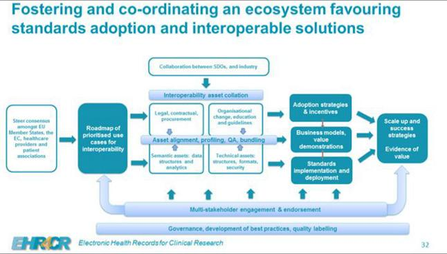
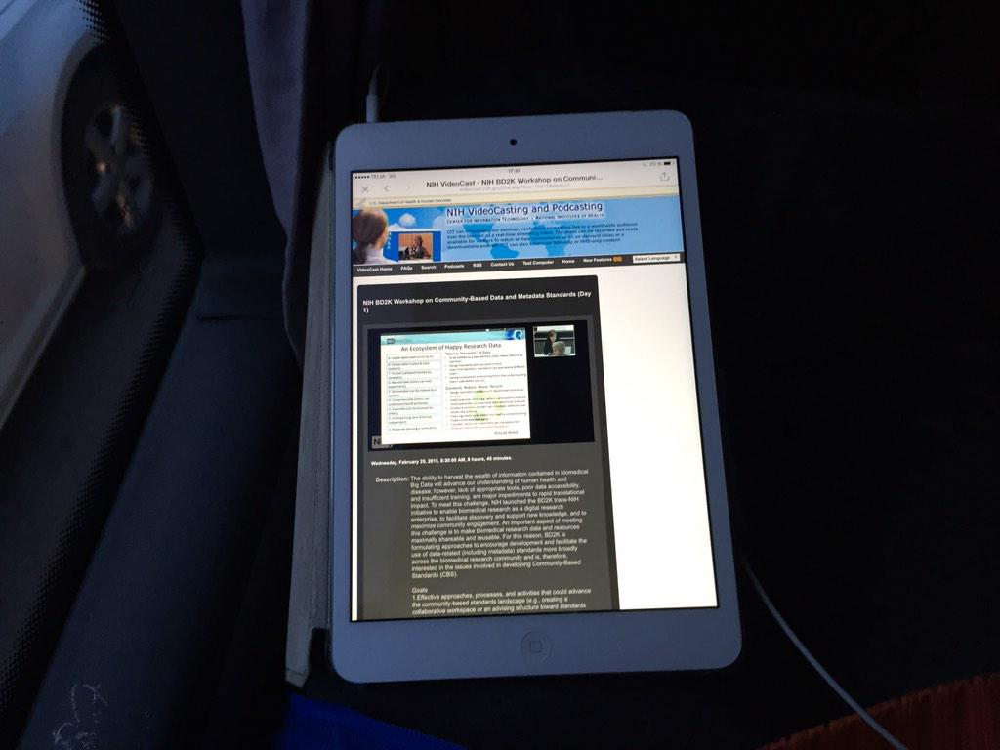
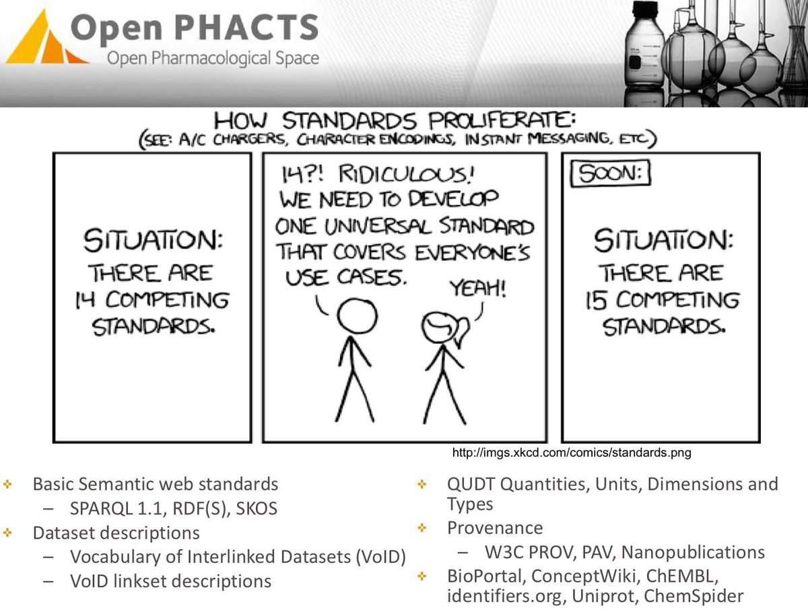
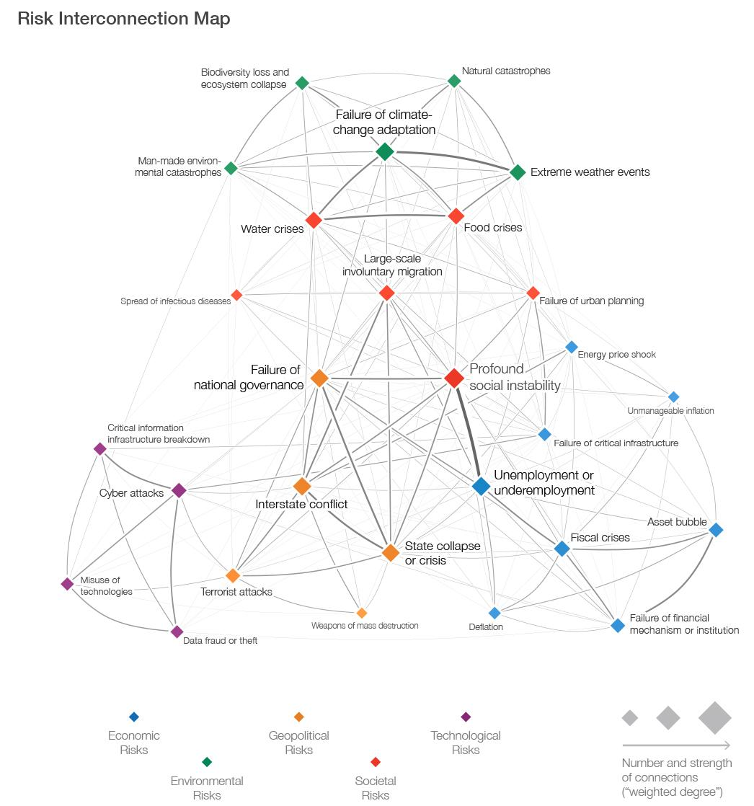

February 2015
Busy week so no FollowFriday from me today, but last week I added two to my 2015 list medium.com/@kerfors/my-fo… : @BecomingDataSci @dpatil
"the wicked problem of managing clinical questionnaires" bit.ly/1EvrQJb HT @omowizard <- FoodForThought for @CDISC Research Concepts
In a #EHR4CR webinar about the new: European Institute for Innovation through Health Data (youtube recording later)

@TAC_NISO Agree, see our joint @Open_PHACTS @IMI_JU #EHR4CR @SALUSProject_EU proposed framework slideshare.net/mobile/kerfors…
@Phil_at_OeRC @BioSharing @NIH_BD2K @eTRIKS1 See also @SALUSProject_EU Data Elements srdc.com.tr/projects/salus… using github.com/srdc/semanticM…
On the bus watching Workshop on Community-Based Data and Metadata Standards 1.usa.gov/19x0SoY #BD2K @NIH_BD2K

@chrhe894 Hej Christer, dags för ny Länkade Data träff, Göteborg 28 april eventbrite.com/e/lankade-data… Intresserad att ge en uppdatering?
+1 RT @Lilly_COI: Could @iodine's approach to simplifying online drug information be applied to #clinicaltrials? ow.ly/JA93H
Reposting a link to a great paper: "Temporal disease trajectories condensed from population-wide registry data.. ift.tt/1qBa1jU
Nice to be in a pre-kick-off tc/online meeting PhUSE: Representing Clinical Program Design in RDF phusewiki.org/wiki/index.php…
Just learned about Allotrope Foundation to facilitate pharmas/biotechs to build a lab data sharing framework allotrope.org
Two new names on my #FollowFriday list medium.com/@kerfors/my-fo… - 1) @BecomingDataSci, 2) @dpatil US First Chief Data Scientist #datascience
This weeks #ff #FollowFriday is @BecomingDataSci I'll be back during the weekend with a note on why I follow Renee
#CSVW: Tabular CSV Data + METADATA as RDF JSON JSONLD <- Would like a SAS use case w3c.github.io/csvw/use-cases… cc: @JeniT @danbri @ivan_herman
"date-time string formats" also discussed in #csvw metadata for "CVS on the Web" github.com/w3c/csvw/issue… <- Add SAS sas.com/store/books/ca…
+1 RT @karinahlin: Love this interview with a passionate female researcher and Nobel laureate, May-Britt Moser - huffingtonpost.com/2015/02/19/may…
"It’s not easy to face up to all the informational chaos that a cataloging effort can reveal." --@tdav linkedin.com/pulse/its-way-…
"cataloging data is worth the trouble and shock at the outcome." --@tdav linkedin.com/pulse/its-way-…
I'm in @privacyanalytic's Responsible De-id. of Clinical Trial Data Webinar with Project Data Sphere and PhUSE bit.ly/1z7QxEz
Great, I'll try to follow #hadoopngs -> MT @mikaelhuss: At the Hadoop NGS workshop at #KTH in Kista today biobankcloud.com/?q=node/34
Nice to see @Roche as the first pharma company in the @UKODImembers list as a Supporter of @ODIHQ #opendata
On my #ToReadList HT @mhausenblas -> MT @martinkl: I transcribed my #devwinter talk into a @confluentinc blog post blog.confluent.io/2015/01/29/mak…
New blog post: Clinical Trial Data Transparency and Linked Data kerfors.blogspot.se/2015/02/clinic… #ctdata #AllTrials #LinkedData #datasharing
Watching video from the release of @theIOM report: Sharing Clinical Trial Data: Maximizing Benefits, Minimizing Risk iom.edu/reports/2015/s…
Same in Swedish :-) MT @timoreilly: Love the word friluftsliv - Norwegian for "free air life” bit.ly/1Ae0qV7 via @sarawinge
Nice overview of standards being used in @Open_PHACTS to integrate biomedical data openphacts.org/documents/Pres…

On the bus watching 1st week of #FLValuingHealth MOOC to learn more about PROMS and QALYS. futurelearn.com/courses/valuin…
Great to see #linkeddata in @anitawaard's slides slideshare.net/anitawaard/clo… from #AAASmtg Panel on Clinical Trials bit.ly/AllTrialsAAAS
"Uniqueness does not equal re-identification" blogs.bmj.com/bmj/2015/02/06… @kelemam critiques @ScienceMagazine's credit card study
MT @senseaboutsci: Interested in how clinical data can be usefully shared, indexed & linked? #AAASmtg #AllTrials <- Yes esp indexed & linked
Thankful for working with a small team taking the early ideas of terminology mapping justifications kerfors.blogspot.se/2013/09/justif… one step further
Started the morning doing some edits in a joint research paper using @overleaf And just learned it has @github sync overleaf.com/blog/195-new-c…
My #FF #FollowFriday this week is @andrewsu, see my 2015 list on why I follow him medium.com/@kerfors/my-fo… and other favourites
I just completed Quest 1 in #Mark2Cure. Join me & help researchers find cures FASTER. If you can read, you can help mark2cure.org
RT @LexJansen: "The power of UCUM: unit conversions using web services" #cdisc cdisc-end-to-end.blogspot.com/2015/02/the-po…
Reading about #microservices and trying to understand if a resolveable URI service is an example? #LinkedData
An urge for version mgmt #CDISC content from @Assero_UK assero.co.uk/2015/content-c… <- Hence configs of variants #ISO11179 slideshare.net/mobile/kerfors…
Wow - the "fyr-klöver" is here, again :-) "Using #ISO11179 to harmonize data elements between clinical models" w3.org/2015/Talks/020…
MT @nicolastorzec: So open.fda.gov provides APIs.. (via @pmika) <- We hope it will be #linkeddata github.com/FDA/openfda/is…
I registered for the Webinar: Responsible De-Id with Clinical Trial data @privacyanalytic #deidentification info.privacyanalytics.ca/EV-2015-CTT-we…
MT @dWiseTech: FDA/PhUSE Computational Science Symposium 2015 hubs.ly/y0vn1N0 @PHUSETwitta <- Delivery of CDISC Standards in RDF
Very nice development by @westurner on @openFDA issue on linking #openfda data github.com/FDA/openfda/is… #linkeddata
Is Schema.org a game changer for the electronic component industry? linkedin.com/pulse/schemaor… by @wohnjalker #LinkedData
I used #devtalks feed from @Sida's Data Revolution event sida.se/Svenska/aktuel… as an example of professionsal use of Twitter HT @pernillan
.@tomayac I'm looking for a current/planned overview of ecosystem of #wikidata, #dbpedia, #freebase, #KnowledgeGraph (#KnowledgeVault), ...
Conclusion & Recommendations: #EHR4CR platform deployment in Swedish Hospitals ethical and legal perspective ehr4cr.eu/views/news/ind…
Hmm, who should be my fourth #FF #FollowFriday on my 2015 list medium.com/@kerfors/my-fo… - @EricTopol or @RebarInter ?
Spark meets Genomics: Helping Fight the Big C with the Big D | Spark Summit spark-summit.org/2014/talk/davi…
BioBankCloud biobankcloud.com an open-source framework, based on Hadoop, for the secure storage and analysis of Big Data in genomics
Re-MT @mikaelhuss: Workshop + hackathon on Hadoop/Spark etc applied to HTS data, Stockholm/Kista 19-20 Feb 2015 biobankcloud.com/?q=node/34
Great to have Top Swedish IT researchers from @SICS_SwedishICT to talk about #BigData in an internal TechTalk session
.@Assero_UK Well, we haven't consider data life cycle beyond submission as @theIOM's report on #datasharing show iom.edu/datasharing
.@Assero_UK How do we get this into eSource: "Each item of [clinical] data would be assigned its own URI"? twitter.com/kerfors/status…
@Assero_UK Agree, see def in @w3c PROV standard w3.org/TR/prov-overvi… So we should use it, see my earlier tweets twitter.com/kerfors/status…
MT @LexJansen: E2E Process, What Is It? assero.co.uk/2015/end-to-en… #cdisc @assero_uk <- it's not the End -> #datasharing iom.edu/datasharing
It's soo nice working together with colleagues with "Tinkerer" in their profiles cc: @goude #MakingPowerpointWareReal
Cool: @IFTTT in a nice article by @wieselgren in the local newspaper @GoteborgsPosten blogg.gp.se/teknik/2015/02…
MT @Zurich: Social instabilit most interconnected w other risks goo.gl/Atyv96 HT @cbrewster <- ping @neo4j

@jharmn How about JSON-LD and Hydra? slideshare.net/lanthaler/buil… by @MarkusLanthaler #api #jsonld
MT @KirkDBorne: Semantic Web And The Automotive Industry: drivedigitalgroup.com/semantic-web-a… by @drivedigitalgrp <- ping @flandqvist
@oskthu Yes, it's now combine in this joint HL7 and W3C subgroup lead by David Booth wiki.hl7.org/index.php?titl…
2nd planning w/ @flandqvist of #LankadeData meetup in Göteborg, late April. Watch out for an early announcement in facebook.com/groups/sswig/